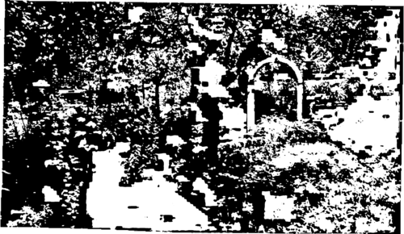

Chapter XIX. Flowers For Shaded Gardens
Description
This section is from the book "Flower Gardening", by H. S. Adams. Also available from Amazon: Flower gardening.
Chapter XIX. Flowers For Shaded Gardens
Ever since gardens began the value of shade as a means of refreshment to man has been recognized, all manner of devices, from the natural to the sheer artificial, being employed to create it. Only in the failure to make the most of existing shade has there been a lamentable lack of recognition.
There is a feeling that flowers and shade will not go hand in hand. The feeling is so strong that when flowers are found growing in garden shade it is usually through neglect rather than intelligent intent.
Full sunshine and the open sky are essential to gardens only in a general way. Nature shows that. Many of her most beautiful gardens are partially shaded; not a few have a leafy screen between them and the sun the livelong day.
Shade, in some measure, is as grateful to numerous cultivated flowers as it is to man. Having had it naturally, they crave it in the garden—even though they are frequently good natured enough to live happily without it.
The deliberate planning of any scheme intended to make for shade should therefore not leave flowers put of complete consideration. No matter what the degree of shade, something there is that will find a particular spot congenial.
To make the point of complete consideration more clear, it is not enough to grow roses, wistaria or honeysuckle over a pergola or arbor, with perhaps a hardy border outside where there is a sunny exposure. So far as the flowers are concerned these are sun propositions. The important thing to learn is that other flowers may flourish in the created shady places—flowers that will utilize waste spaces and sometimes prove no more trouble than grass or weeds; for something must grow in them, be sure of that. Call the pergola or arbor such if you will; but let it be secondarily a shaded garden.
So, in a wider sense, with the whole place. If the garden proper be endowed with shade, necessarily or preferably, seize upon its shade advantages and develop them to the utmost. Or it may be that shade is upon one side of the garden, or the garden leads into shrubbery or thin woodland; then follow out the same idea. But do not overlook the lesser possibilities. Once a very pretty little shade garden not more than ten feet long and three feet wide was made along the stone foundation on the north side of the house. Though it had the sun only a little while in the morning, a couple of dozen kinds of native plants flourished there. No possibility is too small; there are plenty of them under trees, between shrubs or in the shadow of hedges and buildings.
Thin woodland on the outskirts of the home grounds is the finest of all opportunities, for the reason that here there may be a liberal planting of appropriate flowers in a fashion approximating nature. In England there are woodland gardens of the rarest charm, but wholly unstudied appearance, and in them it is easier to find some of the choice American plants than at home. Here, fortunately, there is an awakening and in a few in stances most praiseworthy efforts have been made to bring naturalistic shade gardens to a high degree of perfection.
The list of flowers that may be drawn upon for shaded gardens is far longer than is supposed. Few, for example, take into account the fact that it is made materially more numerous by a small host of spring flowers that may be said to flourish in the shade, though they bloom in full sunshine in pre cisely the same spot. This is a most important point to understand; many plants like to grow under deciduous trees and shrubs, where they may bloom in full sunshine before the foliage is out on the branches over their heads. The remainder of the season they are shade-loving, or at any rate shade-enduring.
Plant always in irregular colonies, even in a square foot or two of waste dooryard space, excepting in the rare instances when such a space as the inner line of a pergola, or parts of a formal garden, would seem to make conventionality desirable. Shaded gardens, as a rule, ought to be naturalistic.
"If the garden proper be endowed with shade, necessarily or preferably, seize upon its shade advantages and develop them to the utmost".
For early spring, when branches are still leafless or nearly so, there is nothing more beautiful than several forms of the hardy primrose (Primula). The loveliest is the English primrose (P. vulgaris) —which has been slow making its way here, considering the fact that it is one of England's commonest wildflowers and that with a proper degree of moisture and summer shade it is quite hardy here. The cowslip (P. veris), the oxlip (P. elatior), any yellow polyanthus (P. polyantha) and the Japanese primrose (P. japónica) are easier of culture and also are in every way desirable for massing on any scale. The pink P. cortusoides Sieboldii and P. farinosa, the lilac P. denticulata, the violet P. cap* itata and the (type) P. auricula are finely suited for shaded gardens but require more care.
Of the spring bulbs there are the snowdrop, Siberian squill, glory-of-the-snow, grape hyacinth, wood hyacinth, common hyacinth, crocus, tulip, crown imperial, daffodil and guinea-hen flower that may be planted where shade comes later. Any of them will grow in the thin grass under the trees of an old orchard and all are the better for a ground cover. This need not be grass and as a rule would better not be, though daffodils look particularly well in it. Snowdrops, for example, will come up through a carpet of periwinkle or bishop's weed, Siberian squill and lily-of-the-valley may be used together for double-cropping shaded ground, tulips thrive among ferns and so on. Avoid all double forms and bizarre color notes in naturalistic planting. Red is not a spring color in the North; so beware of red tulips. The best tulips are the yellow species and the cottage white and yellow selfs; the best daffodils the yellow trumpet and the poet's narcissus.
Bloodroot (Sanguinaria canadensis), which naturalizes well in rocky places, is excellent for early spring; so are Dutchman's breeches (Dielytra cu-cullaria) and Squirrel corn (D. canadensis) • Then there are the foam flower (Tiarella cordifolia), heart-leaved saxifrage (Saxífraga cor di folia), London pride (S. umbrosa), blue bugle (Ajuga genev-ensis) white bugle (A. reptans alba), liverwort (Hepática triloba), white stonecrop (Sedum album) and, later, the perennial forget-me-not (Myosotis semper flor ens) for similarly carpeting the ground. The first three lose their foliage after blooming; so may be double-cropped with ferns and other plants.
For higher growth—a foot or so—in partial shade the wild sweet-william (P. divaricata), sweet woodruff (Asperula odor ata), Greek valerian (Polemonium reptans), common American columbine (Aquilegia canadense) and Pennsylvanian ane-mone (A* pennsylvanica) are admirable when spring is getting ready to merge into summer; closed gentian (Gentiana Andrewsii) in September and the evergreen Christmas rose (Helleborus niger) and Pachysandra terminalis the year round.
The pink, white or yellow foxgloves, which are glorious on the edge of thin woods, for June; monkshood (Aconitum napellus) and cardinal flower (Lobelia cardinalis), for late summer, and Japanese toad lily (Trkyrtis hirta) and Japanese anemone (A. japónica) for early autumn are fine for still higher growth.
Other plants that may be grown in more or less shade are three of the best day lilies, Funkia sub-cordata, F. coerulea and F. Fortunei; the big bleeding-heart (Dielytra spectabilis) and the little one (D. formosa), banebery (Actaea spicata), May apple (Podophyllum peltatum), snakeroot (dm-icifuga racemosa) and false Solomon's seal (SmiU acina racemosa).
Good shrubs are all the native rhododendrons, laurels and azaleas, which do better with the protection; Cornus florida and the shad bush (Amelanchier canadensis).
Last, but not least, the true lilies. Some of the best of them like partial shade and low growth covering the ground around them as well. Moreover these look better so placed than in any other way. Such lilies include L. speciosum, L. superbum, L. longiflorum, L. auratum and L. tenuifolium.
To return to the matter of double-cropping, see that shaded ground is covered in summer unless tree or shrub branches are so low as to do this. There are combinations for all places—even those where grass refuses to grow.
Continue to:
- prev: The Most Dependable Flowers. Continued
- Table of Contents
- next: Chapter XX. The Joy Of A Flower Hobby